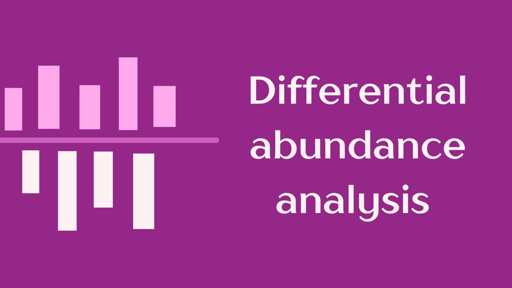
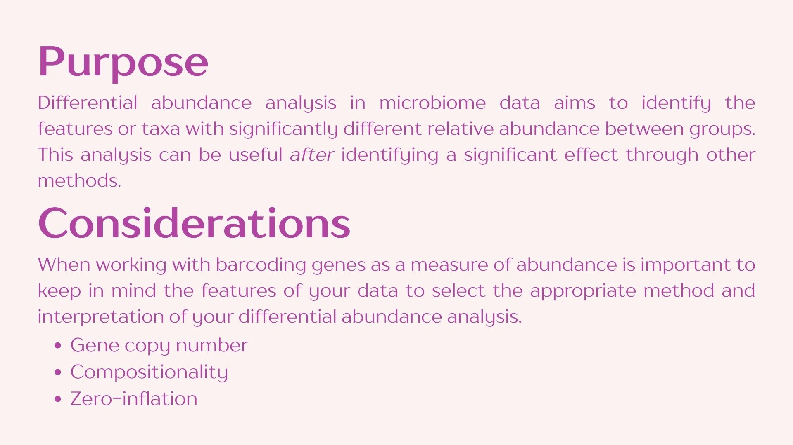
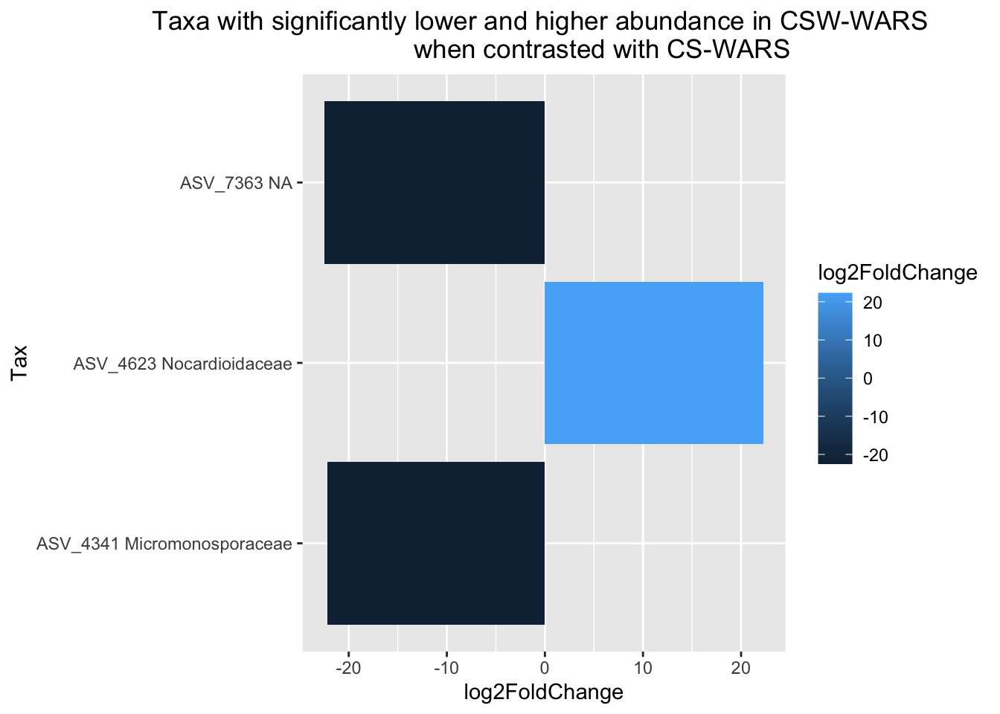

# Set the R library to load packages from
.libPaths("/fs/ess/PAS0471/jelmer/R/metabar")
dyn.load("/fs/ess/PAS0471/jelmer/software/GLPK/lib/libglpk.so.40", local = FALSE)Differential abundance analysis
1 Setting up
If you need to start a new RStudio Server session at OSC or open your RStudio Project, see the box below.
Start an RStudio Server job at OSC & open your RStudio Project (Click to expand)
Start an RStudio Server job
- Log in to OSC at https://ondemand.osc.edu.
- Click on
Interactive Apps(top bar) and thenRStudio Server(all the way at the bottom). - Fill out the form as follows:
- Cluster:
Pitzer - R version:
4.3.0 - Project:
PAS2714 - Number of hours:
4 - Node type:
any - Number of cores:
4
- Cluster:
- Click
Launchand once your job has started, clickConnect to RStudio Server.
Open your RStudio Project
- Your RStudio Project at
/fs/ess/PAS2714/users/<user>may have automatically opened. You can see whether a Project is open, and if so, which one, in the top-right of your screen (left screenshot below) - If your Project isn’t open, click on the R-in-a-box icon to open it (right screenshot below):

jelmer is open.Your Project name is also your username.

Create a new script (Optional)
Click File > New file > R script, and immediately save the new file (File > Save as) as diffabund.R inside your scripts directory1.
We recommend that you copy-and-paste (or type, if you prefer) code from this webpage into your script and then execute the code. That way, you’ll have a nice record of what you did, exactly.
Load packages
# Load the packages (package startup messages are not printed below)
library(DESeq2)
library(phyloseq)
library(microViz)
library(ggplot2)Load the phyloseq object
# Loading data from RDS
bac22rot_phy <- readRDS("results/ps_fulldata/bac22rot_w_ASV.rds")2 Differential abundance analysis


3 DESeq2
This method analyzes taxa individually to contrast abundance between “treatment” groups. A null and alternative hypothesis are set for each taxon:
- H0: The parameters to attain a normal distribution under a negative binomial model are the same for both treatments.
- Ha: The parameters to attain a normal distribution using a negative binomial distribution are the significantly different between treatments.
If the null hypothesis can be rejected the taxon is considered differentially abundant.
Analysis set up
Start by selecting the factors you will be using in your analysis. In this case we will focus on the effect of Rotation on a single Location of the experiment. Because of this both factors should be included in our model.
# Converting phyloseq object to DESeq2 format
dds.df <- phyloseq_to_deseq2(bac22rot_phy, ~Rotation + Location)converting counts to integer modeWarning in DESeqDataSet(se, design = design, ignoreRank): some variables in
design formula are characters, converting to factors# Identifying the groups in our experiment
dds.df$Group <- factor(paste0(dds.df$Rotation, dds.df$Location))
# Setting our experimental desing in the DESeq2 object
design(dds.df) <- formula(~Group)
# Generating our analysis
dds <- DESeq(dds.df, quiet = TRUE)
results(dds) log2 fold change (MLE): Group CSWWARS vs CSNWARS
Wald test p-value: Group CSWWARS vs CSNWARS
DataFrame with 8088 rows and 6 columns
baseMean log2FoldChange lfcSE stat pvalue padj
<numeric> <numeric> <numeric> <numeric> <numeric> <numeric>
ASV_1 0.4255456 -0.241741 4.08044 -0.0592439 0.952758 NA
ASV_2 0.1596288 -0.241729 4.08044 -0.0592410 0.952760 NA
ASV_3 0.0650197 0.479623 4.08044 0.1175419 0.906431 NA
ASV_4 0.0787188 -0.241721 4.08044 -0.0592389 0.952762 NA
ASV_5 0.2633945 1.163709 4.07809 0.2853565 0.775371 NA
... ... ... ... ... ... ...
ASV_8084 29.145910 0.321887 1.44986 0.222013 0.824304 0.917003
ASV_8085 12.368285 0.914731 2.13929 0.427586 0.668953 0.822307
ASV_8086 0.000000 NA NA NA NA NA
ASV_8087 0.164315 1.618506 4.06464 0.398191 0.690489 NA
ASV_8088 2.964239 2.109483 3.02072 0.698338 0.484966 NA
Note
Your output will show each ASV and an associated log2FoldChange that indicates the magnitude of difference in abundance. Another important part of the output is the padj value which indicates the adjusted p-value which tells us if the difference is statistically significant.
Contrasting groups
Once the full dataset has been analyzed you can contrast groups to identify differentially abundant taxa between them. We will focus on the comparison between rotation treatments in the WARS location.
Tip
If you need to remember your group names to make the contrast use:
levels(dds$Group)[1] "CSNWARS" "CSWARS" "CSWNWARS" "CSWWARS" # Select the groups to contrast
res <- results(dds, contrast = c("Group", "CSWARS", "CSWWARS"))
# First look at the results
summary(res)
out of 7097 with nonzero total read count
adjusted p-value < 0.1
LFC > 0 (up) : 6, 0.085%
LFC < 0 (down) : 4, 0.056%
outliers [1] : 273, 3.8%
low counts [2] : 6538, 92%
(mean count < 12)
[1] see 'cooksCutoff' argument of ?results
[2] see 'independentFiltering' argument of ?results# Number of taxa with significantly higher abundance in CSWWARS :
sum(res$padj < 0.1 & res$log2FoldChange > 0, na.rm = TRUE)[1] 6# Number of taxa with significantly lower abundance in CSWWARS:
sum(res$padj < 0.1 & res$log2FoldChange < 0, na.rm = TRUE)[1] 4Let’s have a look at the most significantly different taxa
res.order <- res[order(res$pvalue), ]
head(res.order)[c(1:2, 6)]log2 fold change (MLE): Group CSWARS vs CSWWARS
DataFrame with 6 rows and 3 columns
baseMean log2FoldChange padj
<numeric> <numeric> <numeric>
ASV_4341 51.49725 -22.17580 2.01506e-22
ASV_7363 83.80914 -22.47159 1.12391e-19
ASV_3604 6.49914 -31.65201 NA
ASV_4623 23.15436 22.28713 6.82191e-09
ASV_4434 10.19797 -20.30476 NA
ASV_2821 53.82453 -7.09153 2.58989e-03Prepare samples for visualization
Let’s tidy up our data for easy visualization
# Create a data frame from your DESeq results
res.df <- as.data.frame(res)
# Add the taxonomy of the ASVs to the new data frame
taxmelt <- as.data.frame(tax_table(bac22rot_phy))
res.df$Tax <- paste(rownames(res.df), taxmelt$Family, sep= " ")
# Filter to keep only log2folds > |10| and pvalues <= 0.05
res05 <- dplyr::filter(res.df, padj<=0.05, log2FoldChange<=-10 | log2FoldChange>=10)
# Making sure our new table has everything we need
head(res05) baseMean log2FoldChange lfcSE stat pvalue padj
ASV_4341 51.49725 -22.17580 2.126648 -10.427583 1.855490e-25 2.015062e-22
ASV_4623 23.15436 22.28713 3.319153 6.714702 1.884507e-11 6.821914e-09
ASV_7363 83.80914 -22.47159 2.307547 -9.738303 2.069809e-22 1.123906e-19
Tax
ASV_4341 ASV_4341 Micromonosporaceae
ASV_4623 ASV_4623 Nocardioidaceae
ASV_7363 ASV_7363 NA# Generating a dataframe from our table
res05.df <- as.data.frame(res05)Plotting your data
Now you can use ggplot2 to generate a plot to visualize your data in any way you’d like, but here’s an example:
ggplot(data = res05.df,
aes(x = Tax, y = log2FoldChange, fill = log2FoldChange)) +
geom_bar(stat="identity") +
coord_flip() +
labs(title = "Taxa with significantly lower and higher abundance in CSW-WARS
when contrasted with CS-WARS") +
theme(plot.title = element_text(hjust = 0.5))
Footnotes
(you can create that dir in the dialog box if needed↩︎